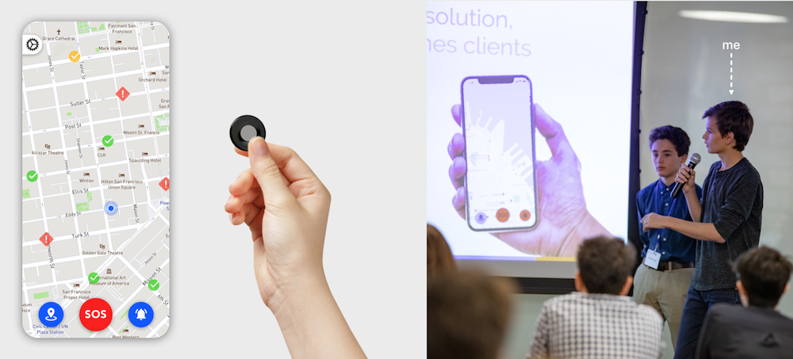
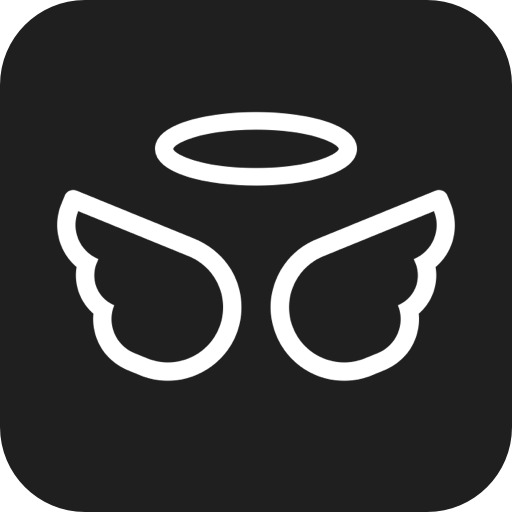
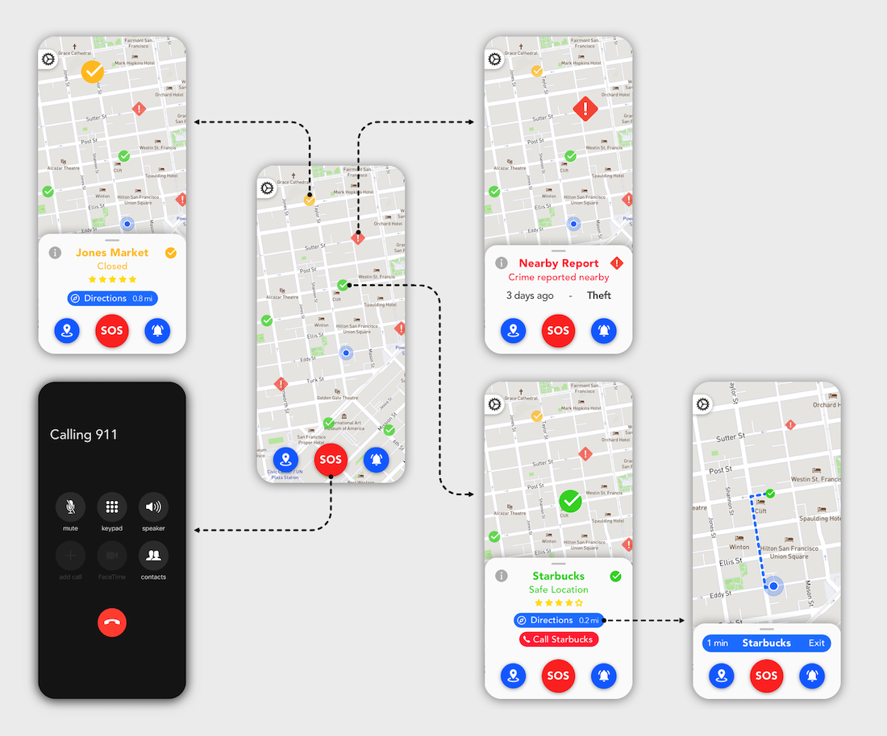
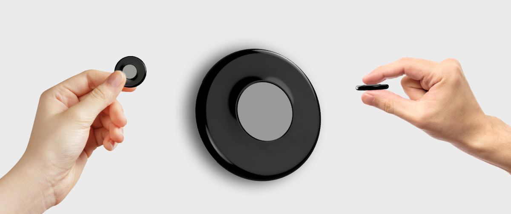

This was a group project that came about in a competition called Start'Up Lycee, organized by my school. The competition consisted of creating and developing an idea for a startup. We were tasked with determining a problem that our society faces and then providing a solution.
My group decided to focus on problems of safety within cities and urban environments.
Our solution was an simple button that could be used to either call the police or alert your emergency contacts when you feel like you are in a dangerous situation.
My Contributions
Over the course of the 48 hours my group and I had to develop a business model, marketing strategy, and give a basic overview of our product. I worked on the design aspects of our startup. I fleshed out both the physical button and the companion app. Even though I designed the products myself, my team and I worked together to determine what would work the best and to try to decide what our ideal vision was. The need to listen to my teammates and to find a way of successfully incorporating their suggestions and opinions into the design was challenging, but this ended up being the most rewarding aspect of the project.


I believe that this experience really helped me improve my design skills because it put me in a situation where I had to create the application with a limited time frame while taking my group's suggestions into account.
At the end of the 48 hours, we had to present our startup idea in front a jury in under 5 minutes. We ended up winning third place and we then went on to present our startup at the very first SF Night of Ideas hosted at the San Francisco Public Library.
We felt that the product could be marketed to the following people: parents who would buy it for their kids; young adults who want to feel more secure in their day to day lives; and tourists who may be unfamiliar with the areas they're traveling in.
App User Flow

When you first open the application, you can see your location on a map and then see areas of interest nearby. The app shows "safe locations" which are places such as a Starbucks where you would be able to go if you felt like someone was following you or if you felt like you were in a potentially dangerous situation. If the safe locations were closed then they would appear in a yellowish orange instead of green. You would also be able to quickly get directions to the "safe location" or even call them. The app would also show you nearby locations where there was a recent crime reported.
The three buttons at the bottom perform the following actions: the one on the left sends your location to your emergency contacts; the one in the middle calls the police; and the one on the right is if you are not in immediate danger but you feel like you might be, like you think someone is following you.
Physical Button

We also wanted to have a physical button so that you didn't have to take out your phone when you felt you were in danger. You would be able to customize what the button presses would do in the app but, by default, they would be set so that pressing it once would be the "not in immediate danger" action, pressing it twice would send your location to your emergency contacts, and pressing it three times would call the police. We wanted to appeal to the largest audience possible while only having one version of the physical button so we decided to go with a very simple design. The button would either be carried on its own in your pocket or you could wear it like a necklace or a bracelet or have it clipped on to your backpack, purse or anywhere on your clothing.